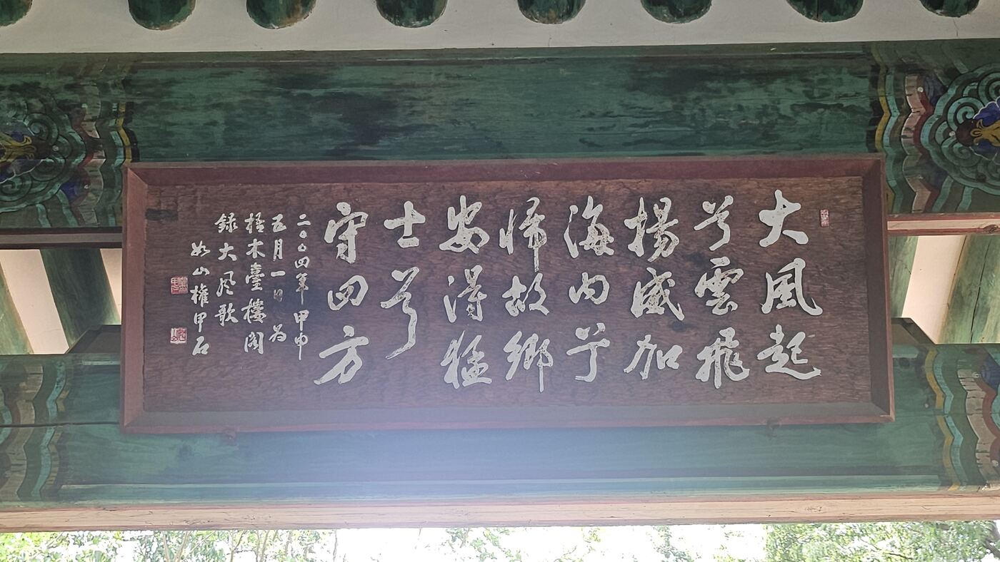
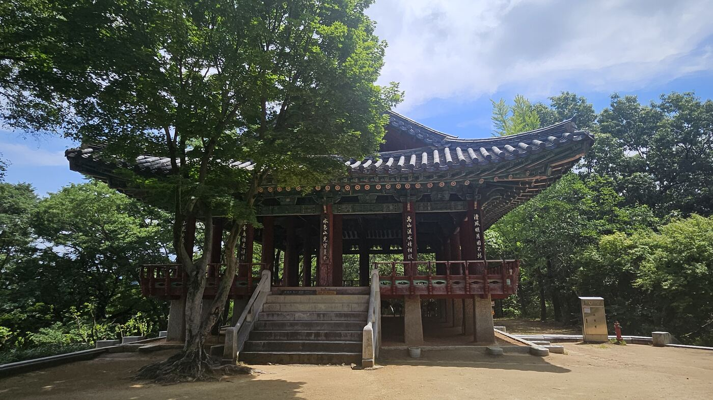
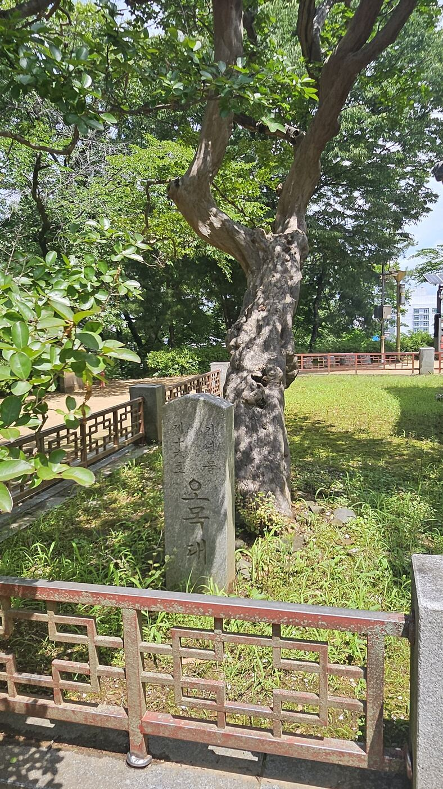

황산에서 왜구를 무너뜨린 이성계는 곧장 개경으로 가지 않았다. 조상이 살던 전주에 먼저 들러, 일가친척을 불러 모아 술잔을 돌렸다. 잔치가 무르익자 그는 노래 한 곡을 불렀다. 그 노래를 듣고, 한 사람은 말없이 잔을 비웠고, 한 사람은 자리를 박차고 나가 홀로 말을 달렸다.
대풍가 — 유방의 노래를 빌리다
오목대(梧木臺)는 전주 이씨의 뿌리가 있는 곳이다. 이성계의 4대조 목조 이안사가 이 일대(옛 이름 자만동)에 살았고, 그 후손들이 함경도로 옮겨가기 전까지 대대로 터를 잡았던 자리다. 황산에서 대승을 거둔 이성계가 굳이 이곳까지 들러 잔치를 벌인 건 우연이 아니다. 조상의 땅에서, 조상의 자손들 앞에서 자신의 승리를 확인받고 싶었던 것이다.
술이 거나해지자 이성계는 노래 한 곡을 불렀다. 중국 한나라를 세운 유방이, 항우를 꺾고 고향 풍패에 돌아와 부른 '대풍가(大風歌)'였다.
큰 바람이 일어나 구름이 날아오르네. 위엄을 온 나라에 떨치고 고향으로 돌아왔도다. 이제 용맹한 장사를 얻어 천하를 지키리라.
— 대풍가(大風歌), 오목대 현판이 노래가 왜 문제였는지는 유방이 누구인지를 알면 바로 이해된다. 유방은 왕을 몰아내고 새 나라를 세운 사람이다. 그 사람의 노래를, 고려의 신하가 승전 잔치에서 부른다는 건 — 지금으로 치면 회사 회식 자리에서 임원이 경쟁사 창업 스토리를 자기 얘기처럼 읊는 것과 비슷하다. 듣는 사람은 다 안다, 저게 무슨 뜻인지.
노래가 끝나자, 한 사람이 말을 달렸다
그 자리에는 정몽주도 있었다. 그는 이 원정에 종사관으로 참전해, 황산의 전장부터 이성계와 함께한 사람이었다. 대풍가가 끝나자 정몽주는 잔치 자리에 더 앉아있지 않았다. 말을 끌어 잔치판을 빠져나갔고, 오목대에서 멀지 않은 남고산성으로 내달렸다.
남고산성에는 봉우리 셋이 있다 — 천경대, 만경대, 억경대. 정몽주가 오른 곳은 그중 만경대, 성벽 안쪽 깎아지른 바위였다. 거기서 그는 개경 쪽 하늘을 바라보며 시 한 수를 읊었다. 후대에 이 시는 '석벽제영(石壁題詠)' — '돌벽에 새긴 시'라는 이름으로 전해진다. 조선 초에 편찬된 지리서 <동국여지승람>에 그 시가 실려 있다.
천 길 바위머리 돌길로 돌고 돌아, 홀로 다다르니 가슴 메는 근심이여. 청산에 깊이 잠겨 맹서하던 나라는, 누른 잎만 어지러이 옛 성터에 쌓였도다. 하염없이 고개 들어 송도만 바라보네.
— 정몽주, 석벽제영(石壁題詠)노래 한 곡과 시 한 수. 같은 잔치, 같은 순간에 두 사람이 정반대의 언어를 남겼다. 이성계는 유방의 노래를 빌려 새 나라를 예고했고, 정몽주는 부여와 백제 같은 옛 나라들의 폐허를 빌려 고려의 운명을 걱정했다. 한 사람은 앞을 봤고, 한 사람은 저물어가는 것을 봤다.
그런데 이 장면에는 뜻밖의 반전이 하나 있다. 정몽주는 시를 남긴 뒤 그대로 떠나버린 게 아니다. 그는 다시 일행에 합류해, 개선장군이 된 이성계와 함께 송도로 돌아갔다. 이때는 위화도 회군보다 8년 전이다. 정몽주에게도 아직은, 걱정스러운 낌새 정도였지 돌이킬 수 없는 결별은 아니었던 셈이다. 진짜 결별은 12년 뒤, 선죽교에서야 온다.
정몽주가 죽고 350년이 지난 1742년, 진장(鎭將) 김의수가 옛 기록을 보고 이 바위에 새겼다.
말은 사라지고 근심만 남아, 후대 사람의 손을 빌려 다시 돌에 새겨진 셈이다.
오목대 답사 동선
1 · 오목대 누각과 대풍가 현판


2 · 640년을 지켜본 나무

3 · 정몽주 우물 — 뛰쳐나간 길목에 남은 흔적
오목대에서 전주천을 건너 무형유산원 쪽으로 산성천을 따라 올라가면, 남고산성으로 향하는 길목에 '정몽주 우물'이라는 이름이 붙은 우물이 하나 있다. 정몽주가 잔치 자리를 뛰쳐나가 말을 몰아 전주천을 건너던 중, 목이 말라 우물가의 아낙에게 물을 청했다는 일화에서 나온 이름이다.
옛 모습을 상상해 최근에 새로 복원해 놓은 것이다.
만경대 석벽의 시가 그렇듯, 이곳도 실제 유물이 아니라 후대 사람들이 이야기를 기리기 위해 다시 세운 흔적이다.
이색, 정몽주, 정도전 — 같은 교실, 다른 운명
오목대 이야기에서 보통 정몽주까지만 등장한다. 대풍가를 듣고 분노해서 말을 달려 나갔다는 그 장면. 그런데 이 장면을 제대로 이해하려면 한 사람을 더 데려와야 한다 — 정몽주의 스승이자, 정도전의 스승이었던 목은 이색이다.
이색은 고려 말 최고의 유학자였다. 성균관 대사성을 지내며 수많은 제자를 길러냈는데, 그 제자 명단이 기가 막히다. 한쪽엔 고려에 마지막까지 충성한 정몽주와 길재. 다른 쪽엔 조선을 설계한 정도전, 권근, 하륜, 윤소종. 같은 교실에서 같은 스승 밑에 배운 사람들이, 스승이 살아있는 동안 서로를 죽고 죽이는 사이가 됐다.
이색의 노선은 결국 어느 쪽으로도 온전히 이어지지 않았다. 제자 정몽주는 스승의 노선(고려 왕조 유지)을 스승보다 더 강경하게 밀어붙이다 목숨을 잃었고, 또 다른 제자 정도전은 그 노선을 정면으로 등지고 새 나라를 설계했다가 자기가 세운 나라의 다음 권력자에게 죽었다. 그리고 이 갈림길의 출발점이었던 이색 자신은, 두 진영 어디에도 온전히 속하지 못한 채 거듭된 유배와 두 아들의 죽음을 겪다가 끝내 의문사로 생을 마쳤다. 한 사람의 가르침에서 세 갈래의 죽음이 갈라져 나온 셈이다.
이방원의 스승은 정말 이색이었을까
결론부터 정리하면, 정확하지 않은 부분이 있다. 이방원(훗날 태종)이 1383년 문과에 급제했을 때 그의 공식 시험관(좌주·座主)은 우현보와 이인민이었다 — 이색이 아니다. 이방원과 이색이 실제로 얽힌 건 1388년, 이방원이 23세의 나이로 이색을 수행해 명나라에 서장관으로 다녀온 사건이다. 이때 이색이 자신이 사행을 떠난 사이 정변이 날까 염려해, 일부러 이성계의 아들을 데려가겠다고 자청했다. 스승과 제자라기보다는, 서로를 감시하고 견제하면서도 신뢰해야 했던 정치적 동행자에 가까웠다.
그 신뢰는 오래가지 않았다. 1392년 정몽주가 살해된 직후, 이방원 쪽은 이색과 그의 두 아들, 그리고 그의 제자인 이숭인·길재까지 한꺼번에 축출했다. 4년 전 함께 명나라 풍랑을 견뎠던 사이였지만, 정치적 승부 앞에서 그 인연은 아무 힘도 쓰지 못했다. 이건 이방원 한 사람만의 냉정함이 아니라, 이 시기 권력 교체가 작동하는 방식 자체를 보여준다 — 어제의 동행자가 오늘의 제거 대상이 되는 데는 아무 모순도 없었다.
이색이 만든 조선은 없다 — 그런데 조선을 만든 건 이색의 제자들이었다
"이색이 만든 조선은 어땠을까"라는 질문에 정직하게 답하면 이렇다. 이색은 조선을 만들지 않았다. 그는 끝까지 역성혁명에 협력하지 않았고, 조선이 세워진 뒤에도 태조가 벼슬을 권했지만 죽을 때까지 거절했다. 이색이 원했던 건 새 나라가 아니라, 고려라는 낡은 집을 부수지 않고 고쳐 쓰는 것이었다 — 불법적으로 쌓인 대토지는 정리하되, 정도전 쪽이 밀어붙인 것 같은 전면적인 토지 재분배(사전개혁)에는 반대하는 노선이었다. 이 노선이 그대로 이겼다면, 나라 이름은 여전히 고려였을 것이다. "이색이 만든 조선"이라는 말 자체가 성립하지 않는다.
다만 여기서 훨씬 흥미로운 진짜 아이러니가 있다. 이색 자신은 조선 건국에 등을 돌렸지만, 조선의 통치 이념과 제도를 실제로 설계한 사람들 — 정도전, 권근, 하륜, 윤소종 — 은 전부 그의 문하생이었다. 심지어 이들이 배운 성리학이라는 학문 자체가 이색이 고려에 뿌리내리게 한 것이었다. 이색은 조선을 만들지 않았지만, 조선은 이색이 키운 사람들의 손으로 만들어졌다. 스승의 사상은 거부당했는데, 스승의 학문은 그대로 다음 왕조의 뼈대가 된 셈이다.
대개는 신념은 버려지고, 그 신념을 만든 방법과 도구만 살아남는다.
이색에게 일어난 일이 바로 그것이었다.
오목대에서 싹튼 마음
다시 오목대로 돌아오면, 그날 잔치 자리에서 이성계가 부른 노래는 단순한 취흥이 아니었다. 함흥에서 실력을 쌓고, 황산에서 전국적 신망을 얻은 사람이, 조상의 땅에서 자기 안의 야심을 처음으로 언어화한 순간이었다. 이걸 훗날 사람들은 '차심(此心)'이라 불렀다 — "이 마음"이라는 뜻이다.
그 마음을 알아차린 사람이 딱 한 명 있었다. 정몽주였다. 그는 자리를 뜨는 것으로 답했다. 하지만 정작 그 마음을 현실로 만든 건, 같은 스승 밑에서 배웠지만 전혀 다른 답을 고른 정도전이었다. 그리고 그 모든 선택의 시작점이었던 이색은, 어느 쪽에도 서지 않은 채 역사의 뒤편으로 밀려났다. 오목대 하나의 잔치 자리에, 이후 20년 조선 건국사의 모든 갈래가 이미 다 놓여 있었던 셈이다.
북방의 장수였던 그는 이곳에서 처음으로 백성의 환호를 받았고, 신하들의 시선을 느꼈으며,
자신이 고려를 넘어 새로운 시대를 열 수 있다는 가능성을 마주했다.
훗날 사람들은 조선이 한양에서 시작되었다고 말하지만,
한 사람의 마음속에서 조선이 시작된 순간은 어쩌면 이 작은 언덕, 오목대였는지도 모른다.
아직 이름 없는 마음
오목대에서 품은 꿈은 아직 명분이 없었다. 왕조를 세우기 위해서는 조상의 허락이 필요했다. 그 답을 찾으러 향한 곳이 준경묘였다.
- 위치
- 전북 전주시 완산구 교동 (전주 한옥마을 인근)
- 지정
- 전북특별자치도 기념물 · 오목대
- 구성
- 오목대 누각(대풍가 현판) · 고종 친필비 '태조고황제주필유지' · 보호수
- 가는 길
- 전주 한옥마을 관광안내소에서 도보로 접근 가능
- 함께 보면 좋은 곳
- 정몽주 우물(오목대~남고산성 길목, 도보 연계 가능), 경기전(태조 어진), 남고산성 만경대(정몽주 우국시 각석) — 만경대까지는 도보로 다소 거리가 있어 별도 답사 권장